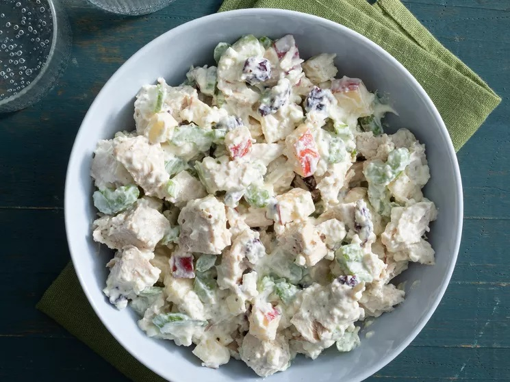

Chicken Salad

For the last four months I've been eating tuna salad sandwhiches daily. Did you know that tuna contains a lot of mercury?
So to spice up my daily diet, and avoid mercury poisoning, I'm trying out this recipe for some tasty chicken salad.
For ingredients you will need
- 4 lbs bone-in, skin-on chicken breast
- 2 scallions, cut into thirds
- 1 lemon, halved
- 1 cup mayonnaise
- 1/4 cup sour cream
- half a teaspoon of DIjon mustard
- 2 or 3 green celery ribs, diced
- half a cup of minced onion
- half a cup of walnuts
- salt and black pepper to taste
Steps
- Cook the chicken and shread it
- In a bowl, whisk together the lemon, mayonnaise, and sour cream
- Ad celery, onion, nuts, herbs, and salt to taste